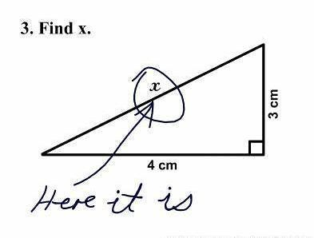

Object oriented programming (OOP for short) is a style of code design.
It tells the programmer how to structure his code.
Like OOP there are other styles of code design, such as these:
- Functional programming
- Modular programming
- Imperative programming
- Declarative programming
- Logical programming
- And more...
But unlike these other code styles, OOP is the most widely used and well known among developers.
It is considered an essential code style to learn.
What is an object?
Objects are the center of OOP.
The purpose of objects is to take something really specific and make it super generalized.
Lets take a look at one thing to generalize...
public class Coordinate {
private double x;
private double y;
private double z;
public Coordinate(double x, double y, double z) {
this.x = x;
this.y = y;
this.z = z;
}
public double distanceTo(Coordinate other) { //Built-in function
double dx = this.x - other.x;
double dy = this.y - other.y;
double dz = this.z - other.z;
return Math.sqrt(dx * dx + dy * dy + dz * dz);
}
public static void main(String[] args) {
Coordinate point1 = new Coordinate(1.0, 2.0, 3.0);
Coordinate point2 = new Coordinate(4.0, 5.0, 6.0);
double distance = point1.distanceTo(point2)
System.out.println("Distance is " + distance);
}
}
Notice how Coordinate takes something specific, x, y, z.
It then generalizes it as a coordinate.
In addition you have a built-in function, "distanceTo", which uses the Pythagorean theorem to show distance.
This generalization is known as "Abstraction".
We are abstracting x, y, z to coordinate.
Why?
Abstraction allows code to be re-used in a readable and understandable way.
Manipulating a Coordinate class is much easier than manipulating x, y, z in lets say a "Player" class.
Look at this...
public class Player {
private Coordinate coordinate;
private Bank bank;
private String username;
public Player(String name) {
this.username = name;
this.coordinate = new Coordinate(0, 0, 0);
this.bank = new Bank();
}
}
Notice how we have two abstractions called Coordinate and Bank. These are "Objects" or generalizations if you will.
Now lets look at the same code without abstraction...
public class Player {
private double x;
private double y;
private double z
private int[][] bankedItems;
private int[][] isNotedItem
private String bankPin;
private String username;
public Player(String name) {
this.username = name;
this.x = 0;
this.y = 0;
this.z = 0;
this.bankedItems = new int[10][10];
this.isNotedItem = new int[10][10];
this.bankPin = "";
}
}
Notice how I have to get very specific.
I am using more variables and at first glace it is difficult to really understand what is going on.
All those "int[][]" and "x, y, z" can be placed safely inside Coordinate and Bank without any fear of confusing the reader.
How classes are structured
We call these abstractions "classes".
These are a custom variable that abstracts other variables.
What is crazy, you can place a custom variable within a custom variable.
This is like that player class. Look at it again...
public class Player {
private Coordinate coordinate;
private Bank bank;
//...
}
Those are custom variables within your custom variable.
Pretty cool right?
Classes are objects, classes are abstractions, classes are custom variables.
It is a way of structuring memory for the developer.
We allocate x, y, z as integers in computer memory then create a custom variable for it.
When we create the custom variable there are 4 types of data we can put inside...
- Inner variables
- Inner functions
- A constructor
- Magic functions
These hold data into memory in a way the developer can understand, once learned.
Read through this code again, I will mark the types of inner memory as comments.
public class Player {
//Inner variable
private Coordinate coordinate;
private Bank bank;
private String username;
//Constructor
public Player(String name) {
this.username = name;
this.coordinate = new Coordinate(0, 0, 0);
this.bank = new Bank();
}
// Inner function
public changeUsername(String name) {
this.username = name;
}
// Magic function
public toString() {
return "Player " + username;
}
}
Okay, lets go from top to bottom.
Inner variables are the custom variables within your custom variables
The constructor tells you how to create your class as a variable.
The inner function is only usable from within that player.
Magic functions are called "magic" because the language takes these functions and uses them in some way.
Magic in programming means something that is taken away from the developer.
Magic works in the background without us really knowing what is happening, thus it is magical.
When you print the player the language magically converts it "toString"...
Player player = new Player("Jesse");
System.out.print(player);
//Output -> "Player Jesse"
There are many many magic functions in all languages.
You basically have to look each one up because they are all different.
You can use other classes
Inheritance is a way to take a class and give it more details.
When we obtain all the data of another class as lets say a different abstraction, it is known as inheritance.
Lets look at our Player example...
class Entity {
private Coordinate coordinate;
private int hitpoints;
public Entity() {
this.coordinate = new Coordinate(0, 0, 0);
this.hitpoints = 10;
}
public toString() {
return "Entity has hitpoints: " + hitpoints.toString();
}
}
public class Player extends Entity {
private Bank bank;
private String username;
public Player(String name) {
super(); //Calls Entity constructor
this.username = name;
this.bank = new Bank();
}
public changeUsername(String name) {
this.username = name;
}
}
In here we extend or give further detail to Entity.
Player absorbs everything from Entity, including the functions, constructor and magic functions.
Player then will have 10 hit points, coordinate 0, 0, 0 and will print "Entity has hit points: 10".
Player player = new Player("Jesse");
System.out.print(player)
// Output: "Entity has hitpoints: 10"
When making classes you get free data
For all your custom variables you get free inner variables, functions, constructor and magic functions.
These form a core of every class for how it is stored in memory.
This is something that the language itself does.
No matter what you do your class will extend or inherit from a class called "Object".
This is the way it looks...
public class Object {
@IntrinsicCandidate
public Object() {}
@IntrinsicCandidate
public final native Class<?> getClass();
@IntrinsicCandidate
protected native Object clone() throws CloneNotSupportedException;
public String toString() {
return getClass().getName() + "@" + Integer.toHexString(hashCode());
}
//More built-in Functions
}
So in reality when we create a class it is actually this...
public Coordinate extends Object {
double x;
double y;
double z;
//Etc.
}
However in most to all languages we do not add the "extends Object".
We just magically know it inherits from Object.
You can check out the Object class in Java if you look inside the language code.
It is quite huge and structures all classes the same way.
All Objects are based on primitives
Primitives are considered the lowest built-in variables types in a language.
All Objects are based on them.
All abstractions are based on them.
In a Coordinate class (like a video game) we can use three double primitives, x, y, z.
When creating new classes without depending on other classes, we have to use primitives.
Literally nothing else exists.
Classes are then abstractions of abstractions of primitives.
For classes there is a creator and consumer
When a coder creates a class they design it in a way to be used.
The class itself is an interface, almost like an API, between the consuming developer and the primitives inside the class.
For example let us say the original creator of the Player class made it 5 years ago.
That creator intended the class to be used in a specific way.
They defined the magic, inner variable/functions and constructor.
If that Player class has been made standard in the source other developers are not meant to touch that class.
We are meant to use that class or consume it.
But, we are not meant to edit that class.
When you start on a new project with other developers you become a consumer of all the objects which are standard.
If you create a new standard, other developers become your consumers and vice versa.
Think of the class design like using an API.
The 4 pillars of OOP
This is something you always learn in Computer Science 1 or Computer Science 2 college courses.
Very academic.
You can naturally pick up on this while you learn coding but its better to explain.
Abstraction
Abstraction is a generalization of a custom variable from other variables and primitives.
It is the whole goal of OOP.
Abstraction is meant to make reading and writing code easier for the developer.
Encapsulation
Encapsulation is another word for putting inner variables within variables.
This is known as wrapping.
Wrapping like putting candy inside a paper container.
We are wrapping primitives and making them abstract.
Another word you hear about encapsulation is hiding.
Hiding means calling an inner variable "private" and not allowing other developers to use it.
As a class creator, hiding inner variables and functions from developers is essential for their consumption.
Inheritance
Inheritance means using the inner functions, inner variables, constructors, inner magic in a different class.
When one class inherits another, it is known as a child-parent relationship.
The child inherits from the parent all its inner workings.
The flexibility this allows in abstraction is amazing.
You would be surprised how easy this makes code to read.
Polymorphism
Polymorphism is where we inherit multiple classes to define one custom variable.
Here is an example...
Player player = new Player("Jesse");
Entity entity = (Entity) player;
System.out.print(entity);
// Output: entity.toString() magic function
Here we are converting Player into its parent class Entity.
This conversion is polymorphism or the ability to turn a class into another.
This can also be done with interface classes which we wont get into.
Should I use Object Oriented Programming?
The use of OOP depends on the language, personal preference and project requirements.
If you need a highly threaded mega optimized project, for example, then you would use functional programming.
If you are making an API which requires no generalizations you can use a procedural approach.
Some people are just addicted to OOP and want to use it for everything.
That is okay too! Very controversial.
As of now Java forces you to use classes/OOP in all of its programming.
Yes you can do procedural programming, but technically you have to use classes up until Java 21.
In the next few versions Java can be written without classes, making Java finally have the option to truly program without OOP.
In the end its up to the team.
Anywho, I hope you learned something...
CTA: Check out my other articles and, if you feel like it, sponsor me on GitHub: https://github.com/sponsors/JesseGuerrero
Happy coding!
Resources
What are magic functions: How the Awesome Might of Magic Functions Works and Is So Simple
What is Computer Science: A Short and Insightful Answer: What is Computer Science?